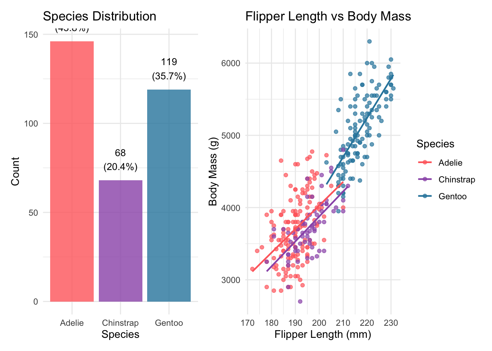
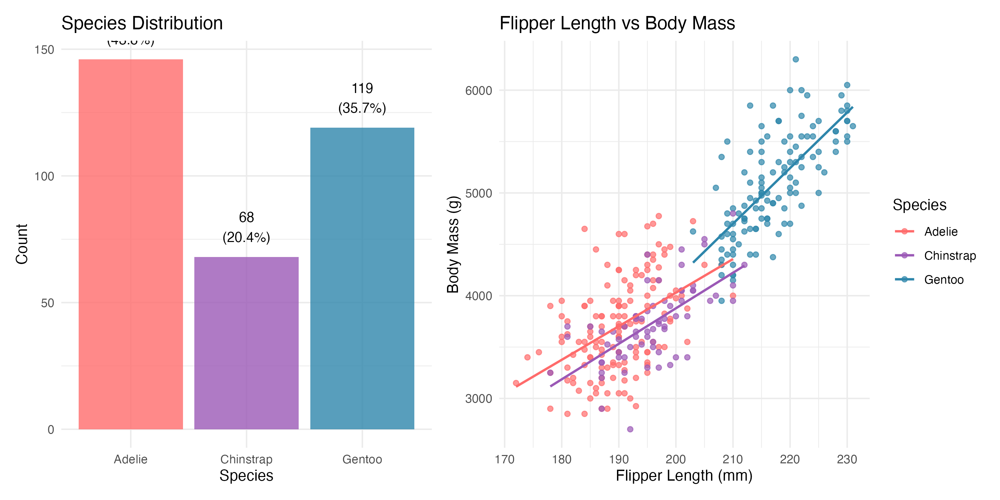
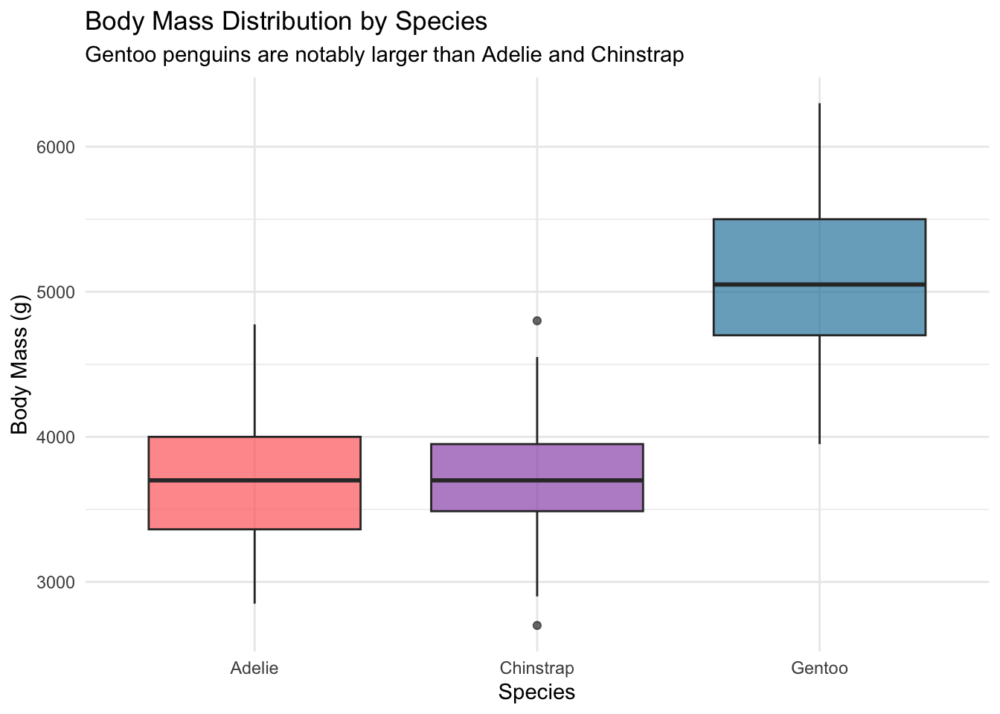
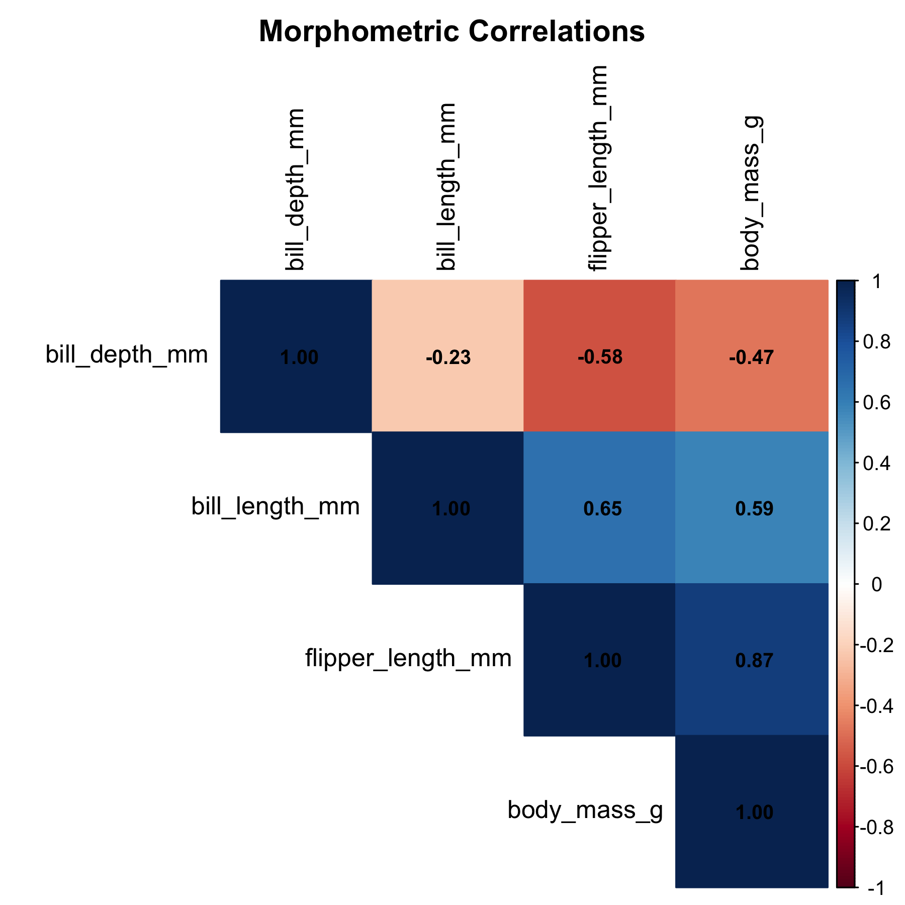
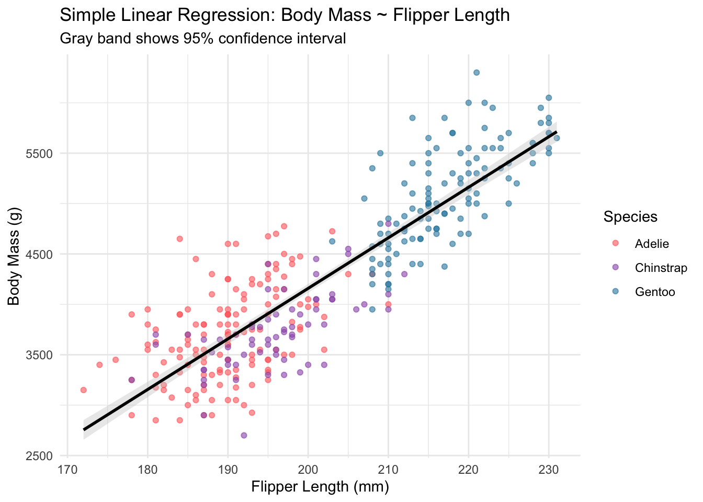
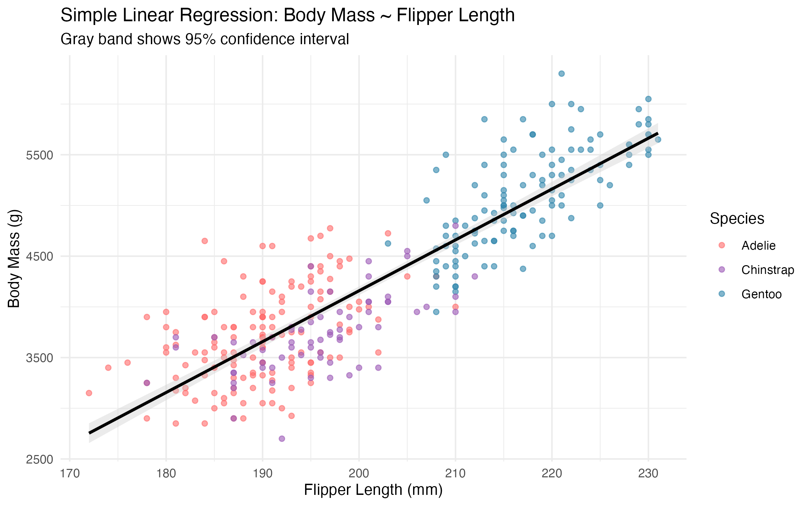
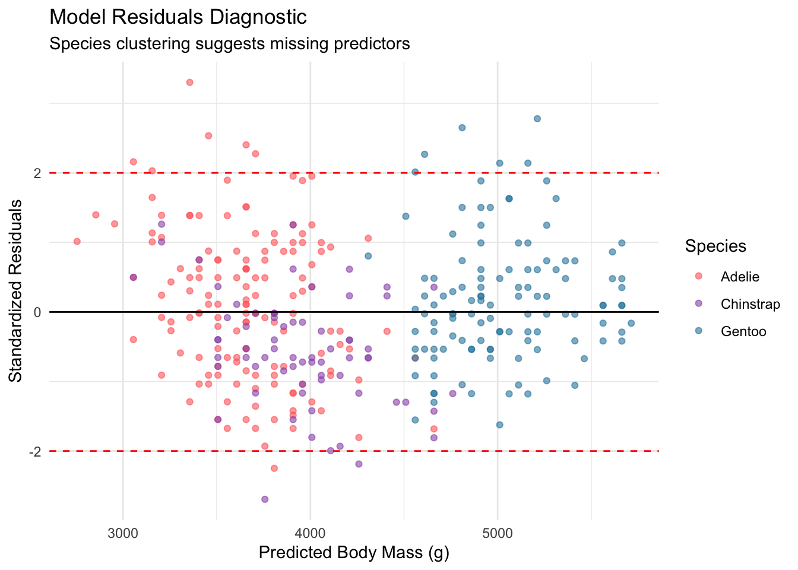
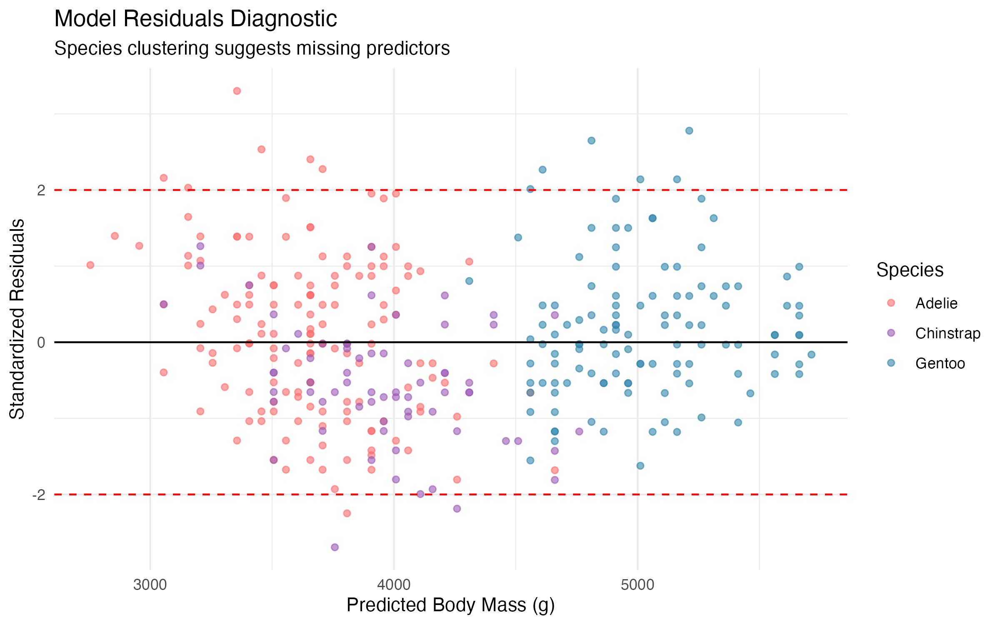
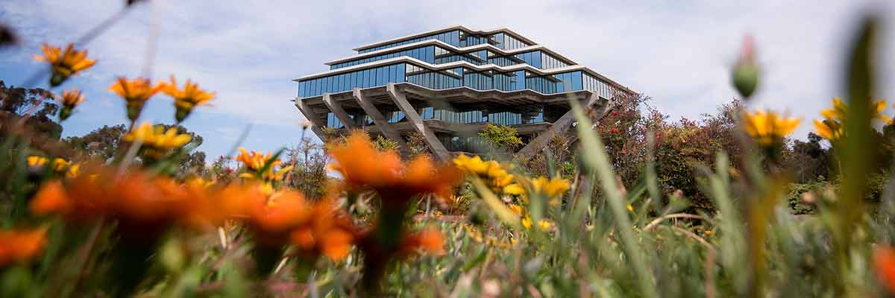

install.packages(
c("palmerpenguins", "tidyverse", "broom",
"corrplot", "GGally", "patchwork", "knitr")
)Palmer Penguins Part 1: Exploratory Data Analysis and Simple Regression
Getting acquainted with Antarctic penguin morphometrics and their predictive relationships
r
palmer-penguins
zzcollab
exploratory-data-analysis
reproducibility
Exploring the Palmer Penguins dataset reveals how much a single morphometric measurement can predict about penguin body mass. A simple regression model provides a strong baseline for subsequent analyses.
Photo: Antarctic penguins. Licensed under CC BY 2.0 via Wikimedia Commons.
1 Introduction
How much information can a single flipper measurement carry? Working with the Palmer Penguins dataset reveals that one well-chosen predictor can explain a surprising amount of variation in body mass, despite initial assumptions that predicting body mass from morphometrics would require a complex model.
The Palmer Penguins dataset was collected by Dr. Kristen Gorman at Palmer Station, Antarctica, and contains morphometric measurements for three species: Adelie (Pygoscelis adeliae), Chinstrap (Pygoscelis antarcticus), and Gentoo (Pygoscelis papua). It has become a widely used teaching dataset in the R community, offering a richer and more realistic alternative to the classic iris dataset.
This post walks through an initial encounter with the data, from exploratory analysis to a simple regression model. The relationship between flipper length and body mass proves remarkably strong, though ignoring species differences leaves a lot on the table.
1.1 Motivations
- To practise a complete exploratory data analysis workflow on a real biological dataset rather than simulated data.
- To examine how well simple morphometric measurements can predict body mass without any species information.
- To provide a concrete example of Simpson’s Paradox and why ignoring grouping variables can be misleading.
- To demonstrate that working with penguin data makes statistics feel more tangible than abstract textbook examples.
- To establish a baseline model that subsequent posts can improve upon.
1.2 Objectives
- Load and clean the Palmer Penguins dataset, documenting missing values and data quality.
- Conduct exploratory data analysis with summary statistics and visualisations for each species.
- Compute correlations among morphometric variables and identify the strongest predictor of body mass.
- Fit a simple linear regression model (body mass ~ flipper length), report R-squared and confidence intervals, and examine residual diagnostics.
Errors and better approaches are welcome; see the Feedback section at the end.

2 Prerequisites and Setup
Background: This post assumes familiarity with basic R syntax and the tidyverse. No prior knowledge of regression modelling is required.
Required packages:
Load libraries:
library(palmerpenguins)
library(tidyverse)
library(broom)
library(corrplot)
library(GGally)
library(patchwork)
library(knitr)
theme_set(theme_minimal(base_size = 12))
penguin_colors <- c(
"Adelie" = "#FF6B6B",
"Chinstrap" = "#9B59B6",
"Gentoo" = "#2E86AB"
)3 What Are Morphometrics?
Morphometrics is the quantitative study of biological form: measuring the size and shape of organisms. In penguin research, this means recording bill length, bill depth, flipper length, and body mass for each individual. These measurements serve as proxies for overall health and condition, and they help ecologists monitor population trends without invasive procedures.
The central question in this post is whether a single measurement, flipper length, can reliably predict body mass. If it can, field researchers gain a quick, non-invasive way to assess penguin condition.
4 Getting Started: Initial Exploration
The analysis begins by loading the data and checking for missing values. The raw dataset has 344 observations, but some records are incomplete.
data(penguins)
cat(
"Palmer Penguins Dataset Overview\n",
"================================\n",
"Dimensions:",
nrow(penguins), "observations x",
ncol(penguins), "variables\n"
)Palmer Penguins Dataset Overview
================================
Dimensions: 344 observations x 8 variablesmissing_counts <- sapply(
penguins, function(x) sum(is.na(x))
)
cat(
"Missing values:",
sum(missing_counts), "total\n\n"
)Missing values: 19 totalpenguins_clean <- penguins |> drop_na()
cat(
"Clean dataset:",
nrow(penguins_clean),
"observations (removed",
nrow(penguins) - nrow(penguins_clean),
"incomplete cases)\n\n"
)Clean dataset: 333 observations (removed 11 incomplete cases)glimpse(penguins_clean)Rows: 333
Columns: 8
$ species <fct> Adelie, Adelie, Adelie, Adelie, Adelie, Adelie, Adel…
$ island <fct> Torgersen, Torgersen, Torgersen, Torgersen, Torgerse…
$ bill_length_mm <dbl> 39.1, 39.5, 40.3, 36.7, 39.3, 38.9, 39.2, 41.1, 38.6…
$ bill_depth_mm <dbl> 18.7, 17.4, 18.0, 19.3, 20.6, 17.8, 19.6, 17.6, 21.2…
$ flipper_length_mm <int> 181, 186, 195, 193, 190, 181, 195, 182, 191, 198, 18…
$ body_mass_g <int> 3750, 3800, 3250, 3450, 3650, 3625, 4675, 3200, 3800…
$ sex <fct> male, female, female, female, male, female, male, fe…
$ year <int> 2007, 2007, 2007, 2007, 2007, 2007, 2007, 2007, 2007…After removing incomplete cases, 333 observations remain across three species. That is a modest but workable sample for exploratory modelling.
4.1 Species and Morphometric Overview
The three species differ noticeably in both sample size and average body mass. Gentoo penguins are considerably larger than Adelie and Chinstrap.
species_summary <- penguins_clean |>
group_by(species) |>
summarise(
n = n(),
body_mass_mean =
round(mean(body_mass_g), 0),
flipper_length_mean =
round(mean(flipper_length_mm), 1),
.groups = "drop"
) |>
mutate(
percentage = round(n / sum(n) * 100, 1)
)
kable(
species_summary,
caption = paste(
"Species Distribution and",
"Key Morphometrics"
),
col.names = c(
"Species", "N", "Body Mass (g)",
"Flipper Length (mm)", "% of Dataset"
)
)| Species | N | Body Mass (g) | Flipper Length (mm) | % of Dataset |
|---|---|---|---|---|
| Adelie | 146 | 3706 | 190.1 | 43.8 |
| Chinstrap | 68 | 3733 | 195.8 | 20.4 |
| Gentoo | 119 | 5092 | 217.2 | 35.7 |
p_species <- ggplot(
species_summary,
aes(x = species, y = n, fill = species)
) +
geom_col(alpha = 0.8) +
geom_text(
aes(
label = paste0(n, "\n(", percentage, "%)")
),
vjust = -0.5, size = 3.5
) +
scale_fill_manual(values = penguin_colors) +
labs(
title = "Species Distribution",
x = "Species", y = "Count"
) +
theme_minimal() +
theme(legend.position = "none")
p_relationship <- ggplot(
penguins_clean,
aes(
x = flipper_length_mm,
y = body_mass_g,
color = species
)
) +
geom_point(alpha = 0.7, size = 1.5) +
geom_smooth(
method = "lm", se = FALSE, size = 0.8
) +
scale_color_manual(values = penguin_colors) +
labs(
title = "Flipper Length vs Body Mass",
x = "Flipper Length (mm)",
y = "Body Mass (g)",
color = "Species"
) +
theme_minimal()
eda_overview <- p_species + p_relationship
print(eda_overview)
ggsave(
"eda-overview.png",
plot = eda_overview,
width = 10, height = 5, dpi = 300
)
The scatter plot on the right immediately suggested a strong positive relationship between flipper length and body mass, and the three species clearly occupy somewhat different regions of the plot.
4.2 Species-Specific Patterns
morphometric_summary <- penguins_clean |>
group_by(species) |>
summarise(
n = n(),
body_mass_mean =
round(mean(body_mass_g), 0),
body_mass_ci =
round(
1.96 * sd(body_mass_g) / sqrt(n()),
1
),
flipper_length_mean =
round(mean(flipper_length_mm), 1),
flipper_length_ci =
round(
1.96 * sd(flipper_length_mm) /
sqrt(n()),
1
),
.groups = "drop"
)
kable(
morphometric_summary,
caption = paste(
"Morphometric Statistics by Species",
"(plus/minus 95% CI)"
),
col.names = c(
"Species", "N", "Body Mass (g)",
"+/- 95% CI",
"Flipper Length (mm)", "+/- 95% CI"
)
)| Species | N | Body Mass (g) | +/- 95% CI | Flipper Length (mm) | +/- 95% CI |
|---|---|---|---|---|---|
| Adelie | 146 | 3706 | 74.4 | 190.1 | 1.1 |
| Chinstrap | 68 | 3733 | 91.4 | 195.8 | 1.7 |
| Gentoo | 119 | 5092 | 90.1 | 217.2 | 1.2 |
p_comparison <- ggplot(
penguins_clean,
aes(x = species, fill = species)
) +
geom_boxplot(
aes(y = body_mass_g),
alpha = 0.7,
position = position_dodge(0.8)
) +
scale_fill_manual(values = penguin_colors) +
labs(
title = paste(
"Body Mass Distribution by Species"
),
subtitle = paste(
"Gentoo penguins are notably larger",
"than Adelie and Chinstrap"
),
x = "Species",
y = "Body Mass (g)"
) +
theme_minimal() +
theme(legend.position = "none")
print(p_comparison)
ggsave(
"species-comparison.png",
plot = p_comparison,
width = 8, height = 5, dpi = 300
)
Gentoo penguins stand out clearly, with a median body mass roughly 1250g higher than the other two species. This species-level variation will matter a great deal when we move to multiple regression in the next post.
Stepping back to see the bigger picture.
4.3 Looking for Relationships
A correlation matrix across the four numeric morphometric variables identifies which measurement has the strongest linear association with body mass.
numeric_vars <- penguins_clean |>
select(
bill_length_mm, bill_depth_mm,
flipper_length_mm, body_mass_g
)
correlation_matrix <- cor(numeric_vars)
body_mass_cors <- correlation_matrix[
"body_mass_g",
] |>
sort(decreasing = TRUE) |>
round(3)
cat(
"Correlations with Body Mass:\n"
)Correlations with Body Mass:cat(sprintf(
" Flipper Length: %s (strongest)\n",
body_mass_cors["flipper_length_mm"]
)) Flipper Length: 0.873 (strongest)cat(sprintf(
" Bill Length: %s\n",
body_mass_cors["bill_length_mm"]
)) Bill Length: 0.589cat(sprintf(
" Bill Depth: %s (negative)\n",
body_mass_cors["bill_depth_mm"]
)) Bill Depth: -0.472 (negative)png(
"correlation-matrix.png",
width = 6, height = 6,
res = 300, units = "in"
)
corrplot(
correlation_matrix,
method = "color",
type = "upper",
order = "hclust",
tl.cex = 1.0,
tl.col = "black",
addCoef.col = "black",
number.cex = 0.8,
title = "Morphometric Correlations",
mar = c(0, 0, 2, 0)
)
dev.off()quartz_off_screen
2 
Flipper length emerged as the clear winner, with a correlation of 0.87 against body mass. This makes biological sense: longer flippers correspond to larger birds overall. The negative correlation with bill depth was initially surprising, but it reflects the confounding influence of species (Gentoo penguins have shallower bills but heavier bodies).
5 Building a Model
5.1 Fitting the Simple Regression
With flipper length identified as the strongest predictor, a simple linear regression model is appropriate.
simple_model <- lm(
body_mass_g ~ flipper_length_mm,
data = penguins_clean
)
model_coefficients <- tidy(
simple_model, conf.int = TRUE
)
model_metrics <- glance(simple_model)
cat("Simple Linear Model Results:\n")Simple Linear Model Results:cat("============================\n")============================cat(sprintf(
"R-squared: %.3f (%.1f%% variance explained)\n",
model_metrics$r.squared,
model_metrics$r.squared * 100
))R-squared: 0.762 (76.2% variance explained)cat(sprintf(
"RMSE: %.1f grams\n",
sigma(simple_model)
))RMSE: 393.3 gramscat(sprintf(
"F-statistic: %.1f (p < 0.001)\n",
model_metrics$statistic
))F-statistic: 1060.3 (p < 0.001)intercept <- model_coefficients$estimate[1]
slope <- model_coefficients$estimate[2]
slope_ci_lower <- model_coefficients$conf.low[2]
slope_ci_upper <- model_coefficients$conf.high[2]
cat("\nModel Equation:\n")
Model Equation:cat(sprintf(
"Body Mass = %.1f + %.1f x Flipper Length\n",
intercept, slope
))Body Mass = -5872.1 + 50.2 x Flipper Lengthcat(sprintf(
"Slope 95%% CI: [%.1f, %.1f] grams/mm\n",
slope_ci_lower, slope_ci_upper
))Slope 95% CI: [47.1, 53.2] grams/mmAn R-squared of 0.76 indicates that flipper length alone accounts for about three-quarters of the variation in body mass. That is a surprisingly strong result for a single predictor.
5.2 Making Predictions
To make the model concrete, predictions for three representative flipper lengths with 95% confidence intervals are generated.
new_data <- tibble(
flipper_length_mm = c(180, 200, 220)
)
predictions <- predict(
simple_model,
newdata = new_data,
interval = "confidence"
)
cat("Example Predictions (95% CI):\n")Example Predictions (95% CI):for (i in 1:nrow(new_data)) {
cat(sprintf(
" %dmm flippers: %.0f g [%.0f, %.0f]\n",
new_data$flipper_length_mm[i],
predictions[i, "fit"],
predictions[i, "lwr"],
predictions[i, "upr"]
))
} 180mm flippers: 3155 g [3079, 3232]
200mm flippers: 4159 g [4116, 4201]
220mm flippers: 5162 g [5090, 5233]The confidence intervals are reasonably narrow, which is encouraging. A penguin with 200mm flippers would be predicted to weigh roughly 4200g, give or take a few hundred grams.
model_plot <- ggplot(
penguins_clean,
aes(x = flipper_length_mm, y = body_mass_g)
) +
geom_point(
aes(color = species), alpha = 0.6
) +
geom_smooth(
method = "lm",
color = "black",
fill = "gray80"
) +
scale_color_manual(values = penguin_colors) +
labs(
title = paste(
"Simple Linear Regression:",
"Body Mass ~ Flipper Length"
),
subtitle = paste(
"Gray band shows 95%",
"confidence interval"
),
x = "Flipper Length (mm)",
y = "Body Mass (g)",
color = "Species"
) +
theme_minimal()
print(model_plot)
ggsave(
"simple-regression-model.png",
plot = model_plot,
width = 8, height = 5, dpi = 300
)
6 Checking Our Work
Before drawing conclusions, examining the residuals reveals whether the model assumptions hold.
penguins_with_predictions <- penguins_clean |>
mutate(
predicted = predict(simple_model),
residuals = residuals(simple_model),
standardized_residuals =
rstandard(simple_model)
)
outliers <- which(
abs(
penguins_with_predictions$standardized_residuals
) > 2.5
)
cat("Model Assumption Checks:\n")Model Assumption Checks:cat(sprintf(
" Potential outliers: %d (>2.5 SD)\n",
length(outliers)
)) Potential outliers: 5 (>2.5 SD)cat(sprintf(
" Residual standard error: %.1f grams\n",
sigma(simple_model)
)) Residual standard error: 393.3 gramsdiagnostic_plot <- ggplot(
penguins_with_predictions,
aes(
x = predicted,
y = standardized_residuals
)
) +
geom_point(
aes(color = species), alpha = 0.6
) +
geom_hline(
yintercept = c(-2, 0, 2),
linetype = c("dashed", "solid", "dashed"),
color = c("red", "black", "red")
) +
scale_color_manual(values = penguin_colors) +
labs(
title = "Model Residuals Diagnostic",
subtitle = paste(
"Species clustering suggests",
"missing predictors"
),
x = "Predicted Body Mass (g)",
y = "Standardized Residuals",
color = "Species"
) +
theme_minimal()
print(diagnostic_plot)
ggsave(
"model-diagnostics.png",
plot = diagnostic_plot,
width = 8, height = 5, dpi = 300
)
The residual plot reveals a clear pattern: the three species form distinct clusters. This indicates that the simple model, while useful, is leaving systematic variation on the table. Species identity clearly matters, and ignoring it introduces bias into the predictions.
6.1 Things to Watch Out For
- Simpson’s Paradox is real. Ignoring species can reverse or obscure the true relationship between variables. Always check for grouping structure.
- Missing data is not random. The 11 incomplete cases dropped may not be missing at random. It is worth investigating why measurements were missing before assuming complete-case analysis is safe.
- Correlation is not slope. A correlation of 0.87 sounds high, but the RMSE of 393g means individual predictions can be off by quite a bit.
- Extrapolation is dangerous. The model is only valid within the observed flipper length range (172-231mm). Predictions outside this range are unreliable.
- Residual patterns demand attention. When residuals cluster by group, the model is telling you something important is missing.

Pausing to reflect before drawing conclusions.
7 What Did We Learn?
7.1 Lessons Learnt
Conceptual Understanding:
- Flipper length alone explains 76.2% of body mass variance (R-squared = 0.762), which is a remarkably strong single-predictor result in biological data.
- Species-level differences are substantial: Gentoo penguins average roughly 5000g compared to approximately 3700g for Adelie and Chinstrap.
- The negative correlation between bill depth and body mass (r = -0.47) is a classic example of confounding by species, not a true biological relationship.
- Confidence intervals around the slope (approximately 46-54 grams per mm of flipper length) are narrow enough to be practically useful for field estimation.
7.1.1 Technical Skills
- Using
broom::tidy()andbroom::glance()produces tidy model summaries that integrate cleanly into a tidyverse workflow. corrplotprovides a quick visual summary of multivariate relationships that is easier to scan than a numeric matrix.- Combining
patchworkwithggplot2enables side-by-side panel figures without wrestling withpar(mfrow)or grid graphics. - The
predict()function withinterval = "confidence"gives immediate access to uncertainty quantification for new observations.
7.1.2 Gotchas and Pitfalls
- Dropping
NArows silently can change species proportions; always report how many cases were removed and from which groups. - The default
geom_smooth(method = "lm")plots a confidence band for the mean, not a prediction interval; these are different and should not be confused. - Saving a plot with
ggsave()and then including it withinclude_graphics()can produce slightly different dimensions than the inline rendering; set explicit width and height to ensure consistency. - Colour palettes that look fine on screen may not be distinguishable in greyscale or to colour-blind readers; always use shape or linetype as a secondary encoding.
7.2 Limitations
- The dataset contains only 333 complete observations across three species, which limits the complexity of models that can be reliably estimated.
- Data were collected between 2007 and 2009 at a single Antarctic station; climate and environmental conditions may have changed since then.
- The simple model treats all species as a homogeneous population, which the residual analysis clearly shows is inappropriate.
- Measurement error in morphometric variables is not accounted for in the model.
- Sex is available in the data but was not included in this initial analysis; it may explain additional variance.
- The causal direction is assumed (flipper length predicts mass), but both variables are expressions of overall body size.
7.3 Opportunities for Improvement
- Add species as a categorical predictor to account for the between-species variance visible in the residuals.
- Include bill length and bill depth as additional predictors in a multiple regression framework.
- Explore interaction terms between species and flipper length to allow different slopes per species.
- Use cross-validation to assess out-of-sample prediction accuracy rather than relying solely on in-sample R-squared.
- Compare linear models to non-parametric approaches such as random forests to see whether the linear assumption is costing predictive accuracy.
- Investigate the missing data mechanism before dropping incomplete cases.
8 Wrapping Up
This first exploration of the Palmer Penguins dataset revealed that flipper length is a remarkably strong predictor of body mass, but that ignoring species differences leaves substantial room for improvement.
Even a simple regression model can tell a compelling story when paired with careful diagnostic checks. The residual clustering by species was the most instructive finding: it shows exactly where the model falls short and points directly toward the next analytical step.
For analysts working through this kind of analysis, the advice is to always plot the residuals and look for structure. The numbers alone (R-squared, p-values) do not tell the whole story.
Main takeaways:
- Flipper length explains 76.2% of body mass variance (R-squared = 0.762).
- RMSE of approximately 393g provides a practical measure of prediction accuracy.
- Species clustering in residuals indicates the model is missing a key predictor.
- Adding species information in Part 2 will improve R-squared to over 0.860.
9 See Also
Related posts in this series:
- Part 2: Multiple Regression and Species Effects
- Part 3: Advanced Models and Cross-Validation
- Part 4: Model Diagnostics and Interpretation
- Part 5: Random Forest vs Linear Models
Key resources:
- Palmer Penguins R Package – official documentation and vignettes
- R for Data Science (2e) – Wickham, Cetinkaya-Rundel, and Grolemund
- Introduction to Statistical Learning – James, Witten, Hastie, and Tibshirani
- Tidy Modeling with R – Kuhn and Silge
10 Reproducibility
Data source: The palmerpenguins R package (version 0.1.1), which provides the penguins dataset collected by Dr. Kristen Gorman at Palmer Station, Antarctica.
Analysis pipeline:
Rscript analysis/scripts/01_prepare_data.R
Rscript analysis/scripts/02_fit_models.R
Rscript analysis/scripts/03_generate_figures.R
quarto render index.qmdSession information:
R version 4.5.3 (2026-03-11)
Platform: aarch64-apple-darwin20
Running under: macOS Tahoe 26.4.1
Matrix products: default
BLAS: /Library/Frameworks/R.framework/Versions/4.5-arm64/Resources/lib/libRblas.0.dylib
LAPACK: /Library/Frameworks/R.framework/Versions/4.5-arm64/Resources/lib/libRlapack.dylib; LAPACK version 3.12.1
locale:
[1] en_US.UTF-8/en_US.UTF-8/en_US.UTF-8/C/en_US.UTF-8/en_US.UTF-8
time zone: America/Los_Angeles
tzcode source: internal
attached base packages:
[1] stats graphics grDevices utils datasets methods base
other attached packages:
[1] knitr_1.51 patchwork_1.3.2 GGally_2.2.1
[4] corrplot_0.95 broom_1.0.11 lubridate_1.9.4
[7] forcats_1.0.0 stringr_1.6.0 dplyr_1.2.1
[10] purrr_1.2.1 readr_2.2.0 tidyr_1.3.2
[13] tibble_3.3.1 ggplot2_4.0.2 tidyverse_2.0.0
[16] palmerpenguins_0.1.1
loaded via a namespace (and not attached):
[1] generics_0.1.4 lattice_0.22-9 stringi_1.8.7 hms_1.1.4
[5] digest_0.6.39 magrittr_2.0.5 evaluate_1.0.5 grid_4.5.3
[9] timechange_0.3.0 RColorBrewer_1.1-3 fastmap_1.2.0 Matrix_1.7-4
[13] plyr_1.8.9 jsonlite_2.0.0 backports_1.5.0 mgcv_1.9-4
[17] scales_1.4.0 textshaping_1.0.4 cli_3.6.5 rlang_1.1.7
[21] splines_4.5.3 withr_3.0.2 yaml_2.3.12 otel_0.2.0
[25] tools_4.5.3 parallel_4.5.3 tzdb_0.5.0 ggstats_0.9.0
[29] png_0.1-8 vctrs_0.7.2 R6_2.6.1 lifecycle_1.0.5
[33] htmlwidgets_1.6.4 ragg_1.5.0 pkgconfig_2.0.3 pillar_1.11.1
[37] gtable_0.3.6 glue_1.8.0 Rcpp_1.1.1 systemfonts_1.3.1
[41] xfun_0.57 tidyselect_1.2.1 farver_2.1.2 nlme_3.1-168
[45] htmltools_0.5.9 rmarkdown_2.31 labeling_0.4.3 compiler_4.5.3
[49] S7_0.2.1 11 Let’s Connect
Have questions, suggestions, or spot an error? Let me know.
- GitHub: rgt47
- Twitter/X: @rgt47
- LinkedIn: Ronald Glenn Thomas
- Email: Contact form
I would enjoy hearing from you if:
- You spot an error or a better approach to any of the code in this post.
- You have suggestions for topics you would like to see covered.
- You want to discuss R programming, data science, or reproducible research.
- You have questions about anything in this tutorial.
- You just want to say hello and connect.